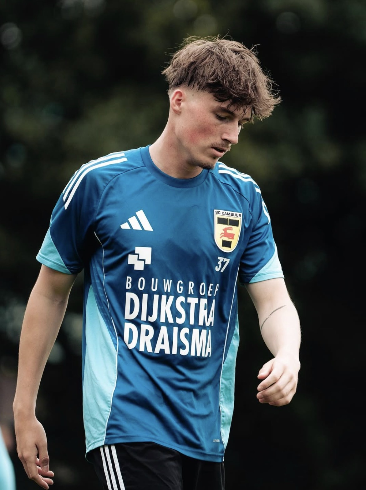
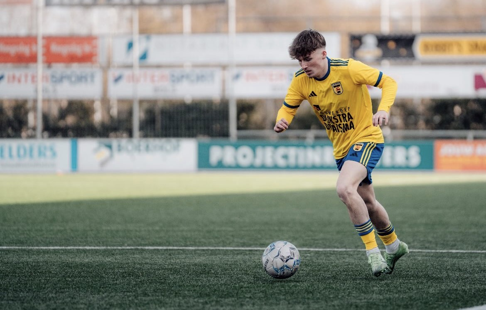

Leer me kennen
Van het voetbalveld naar de kappersstoel
Wie is Sven?
"Ik vind het leuk om anderen er verzorgd uit te laten zien en met een lach weg te laten gaan."
Met 21 jaar ben ik misschien jong, maar ik weet precies wat er speelt op het gebied van herenkapsels. Mode en trends hebben me altijd geboeid , en je haar is daar een groot onderdeel van. In mijn kapsalon staat een relaxte sfeer centraal: we knippen, we praten, en je gaat er altijd beter uitziend vandoor.


Het verhaal
Jarenlang presteerde ik op topsportniveau als voetballer bij SC Cambuur. Discipline, precisie en altijd voor het beste gaan , dat zit er bij mij ingebakken. Toen het tijd was voor een nieuwe uitdaging, hoefde ik niet lang na te denken.
Mode en trends hielden me altijd al bezig. Je haar is een groot onderdeel van hoe je eruitziet en hoe je je voelt. Ik besloot een barbercursus te volgen om de kneepjes van het vak te leren en zette daarna mijn eigen kapsalon op.
De mentaliteit van een topsporter neem ik mee naar elke knipbeurt: ik ga voor het beste resultaat, altijd.
Waar ik goed in ben
Volledig gespecialiseerd in herenkapsels , van simpel tot de meest technische fades
Strakke, tijdloze coupe die altijd goed zit. Perfect afgewerkt tot op de millimeter.
Van low taper fade tot burst fade , vloeiende overgangen die echt het verschil maken.
Strakke baardlijn, trimmen of klassiek scheren met warm doek , altijd verzorgd.
Altijd op de hoogte van de nieuwste kleur- en stijltrends voor mannen.
De sfeer bij Kapper Sven
Geen stijve barbershop waar je stil moet zitten. Bij Kapper Sven is het relaxed , we praten over voetbal, mode, muziek of whatever. Jij voelt je op je gemak, en dat zie je terug in het resultaat.
Kom langsKlaar voor een nieuwe look?
Bel of app voor een afspraak.